Estructuras Metálicas en Quito
Fabricación e Instalación de Techos, Galpones y Cubiertas
Diseñamos, fabricamos y montamos estructuras metálicas en Quito para vivienda, comercio y obra: techos y cubiertas livianas, galpones, estructuras para terrazas y locales, cerchas y columnas de acero. Taller propio en Quito y 22 años de oficio.
Cada estructura se calcula según la luz a cubrir, la carga y las condiciones del terreno o la losa. Vamos a la obra a medir y revisar apoyos sin costo, y con esos datos entregamos el presupuesto.
Estructuras que hemos fabricado
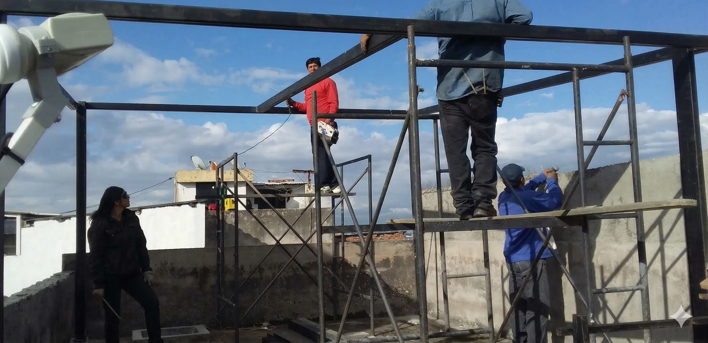
Estructura metálica para terraza · Ref. N1
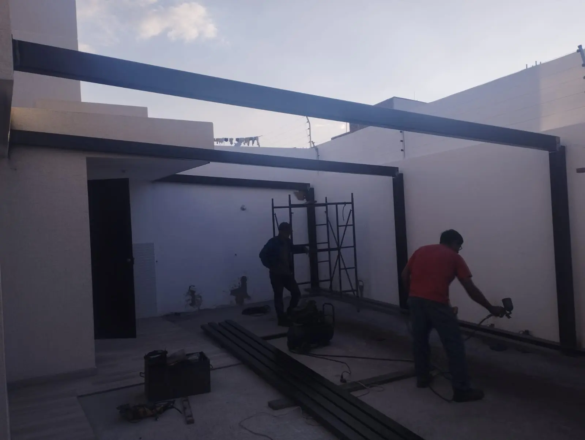
Viga metálica interior · Ref. N2
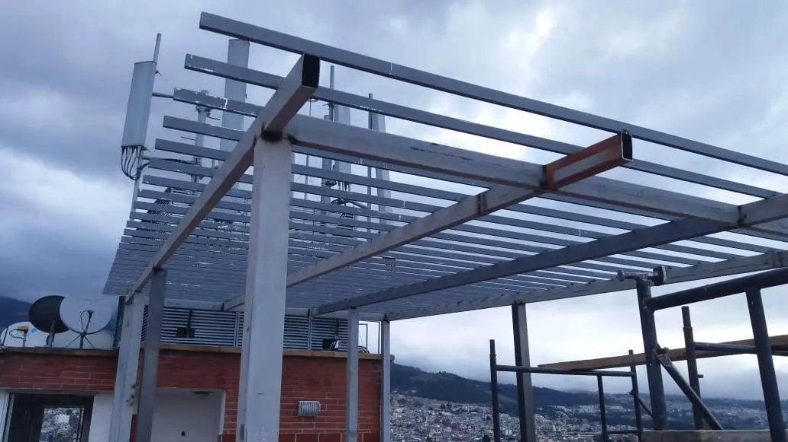
Estructura de vigas en terraza · Ref. N3
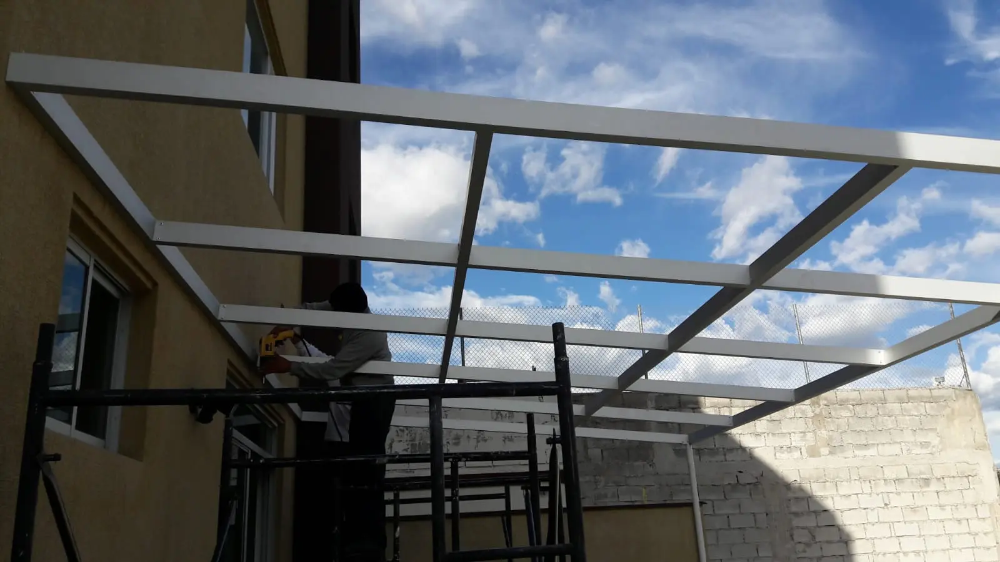
Estructura de techo sobre patio · Ref. N4
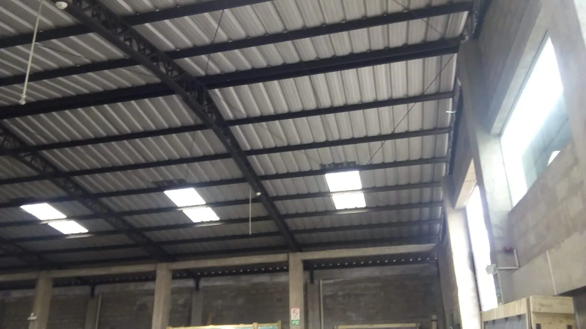
Galpón con cubierta metálica · Ref. N5
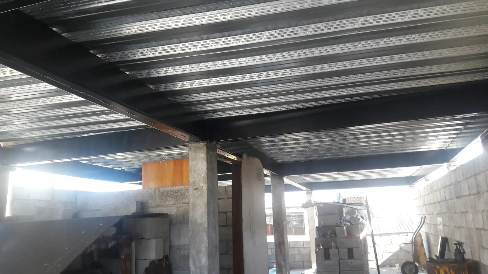
Entrepiso con placa colaborante · Ref. N6
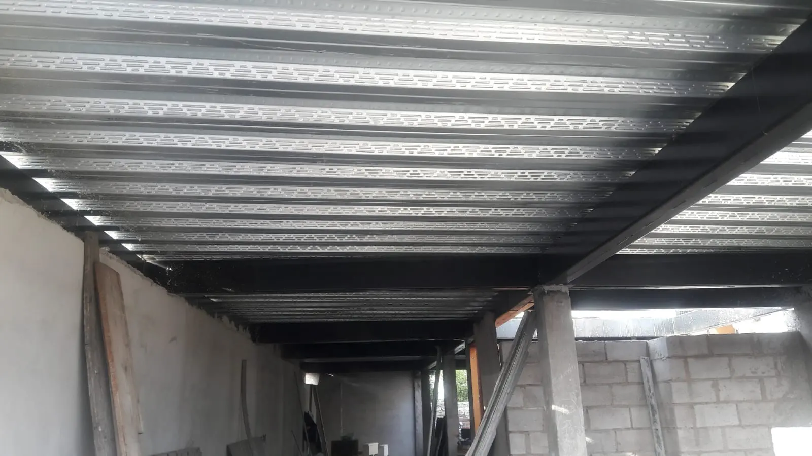
Losa metálica · Ref. N7
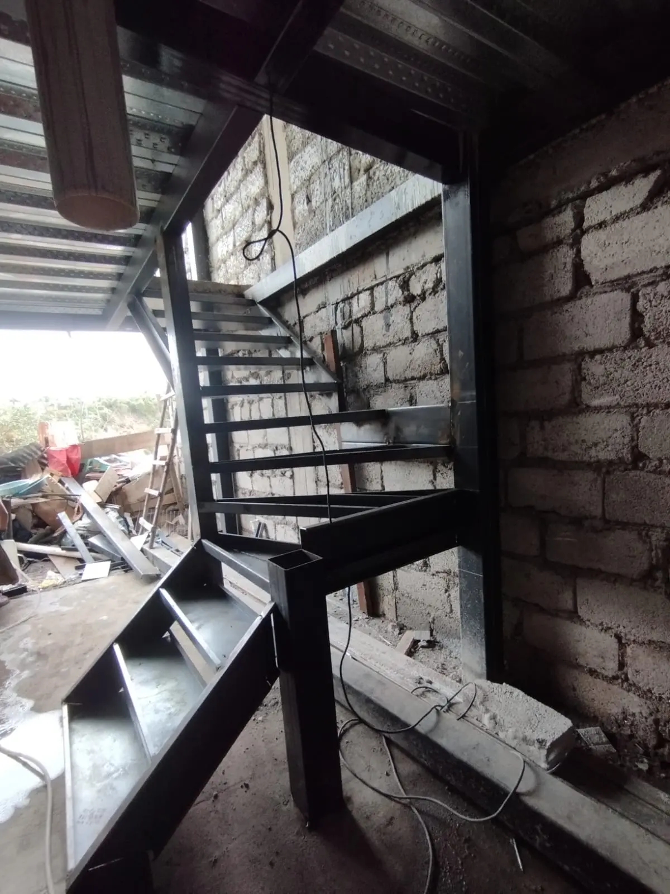
Gradas de estructura metálica · Ref. N8
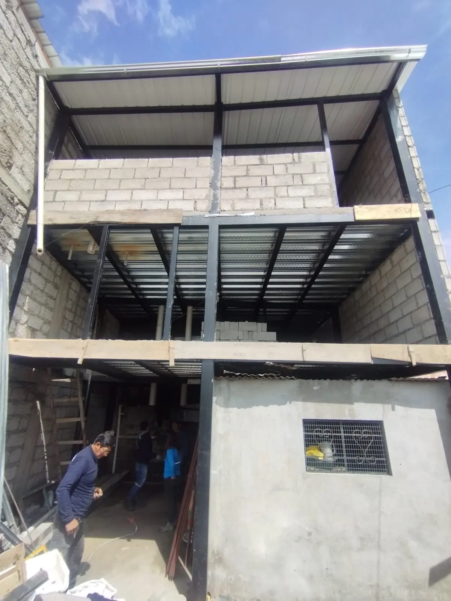
Entrepiso y cubierta metálica · Ref. N9
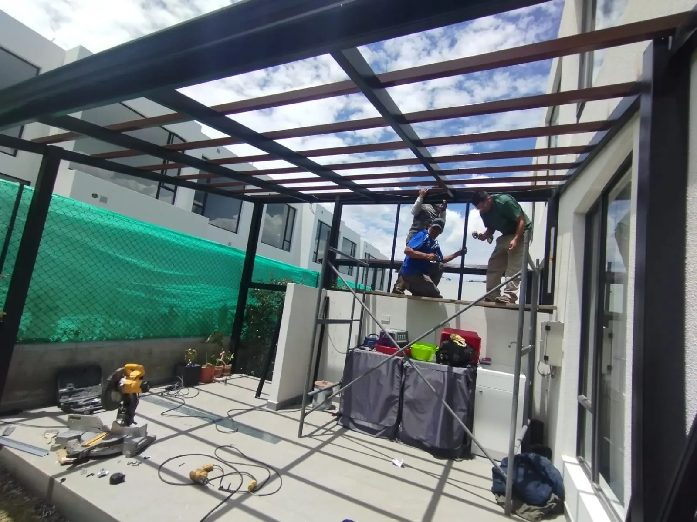
Pérgola metálica · Ref. N10
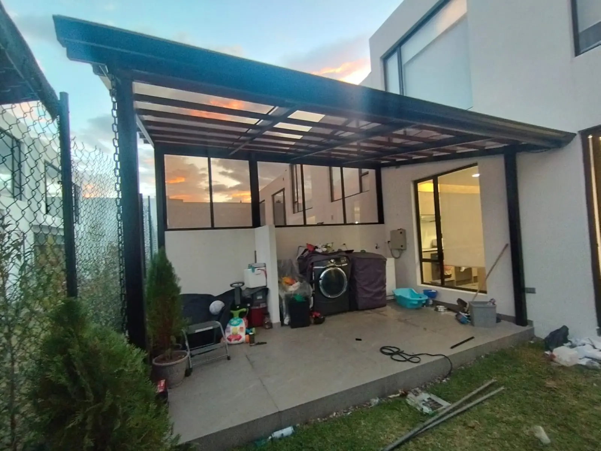
Cubierta metálica para patio · Ref. N11
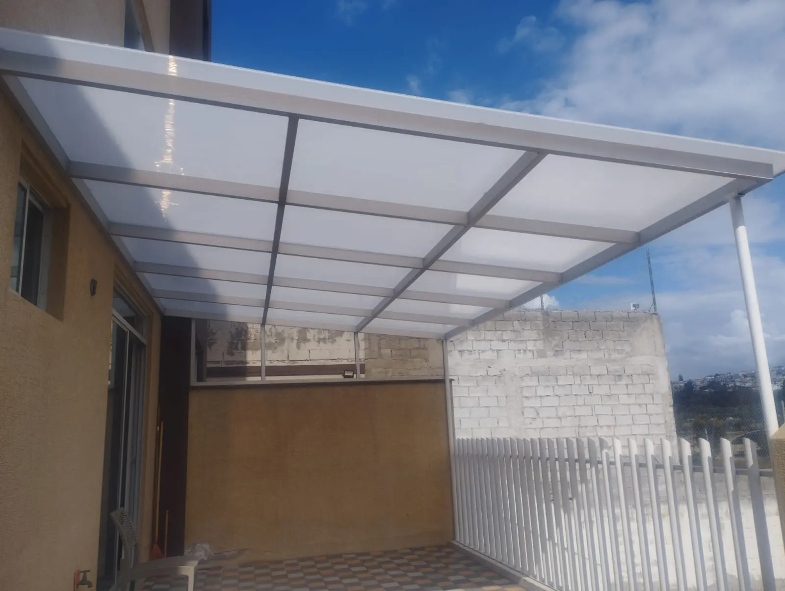
Cubierta de policarbonato para garaje · Ref. N12
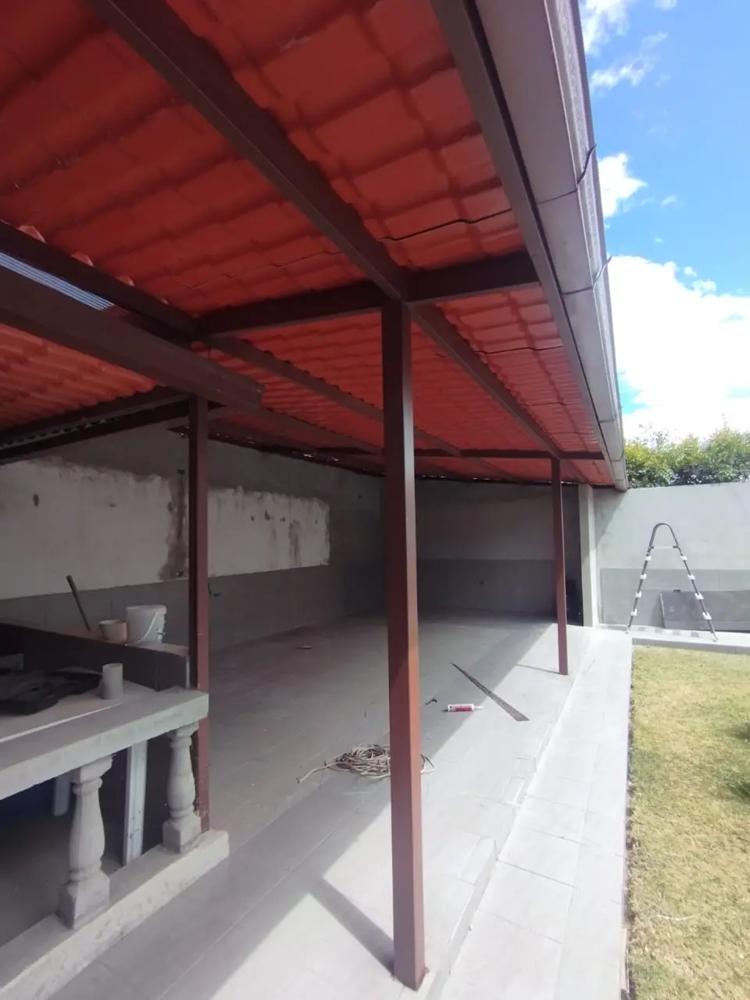
Cubierta metálica para corredor · Ref. N13
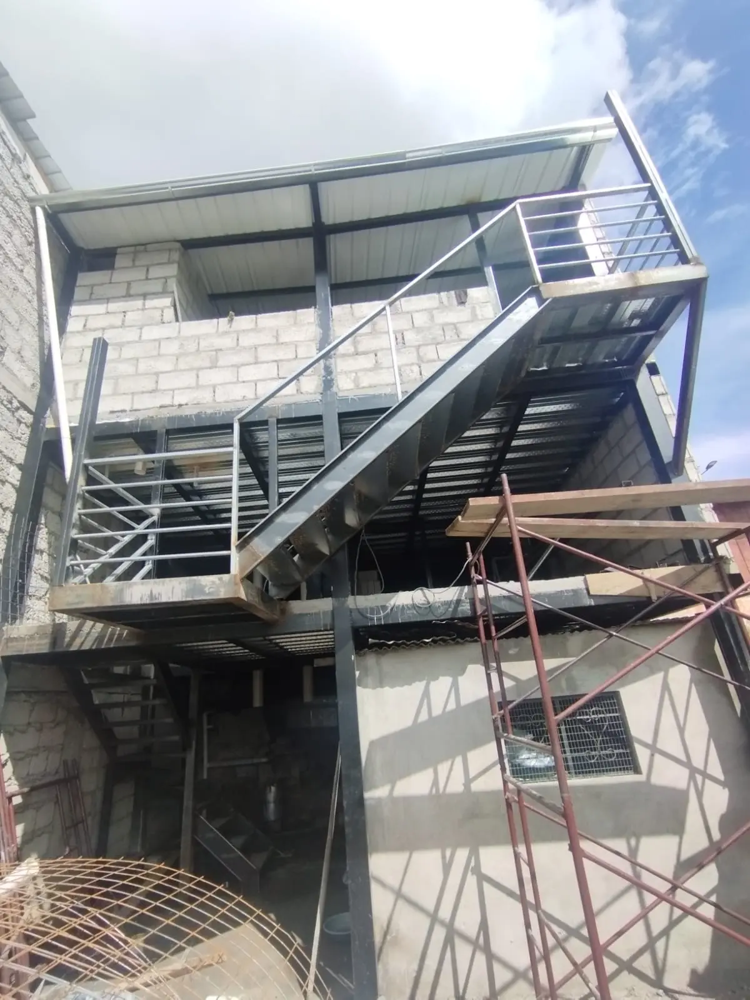
Gradas metálicas exteriores · Ref. N14
Fabricación de estructuras metálicas en Quito
Fabricamos e instalamos estructuras metálicas en Quito para viviendas, negocios y proyectos industriales. Trabajamos con acero para dar resistencia, durabilidad y seguridad en cada obra, y cada proyecto se adapta al espacio disponible, al uso previsto y a las condiciones del terreno o la losa.
Cubiertas metálicas para techos
Una cubierta metálica tiene dos partes: la estructura de acero que la sostiene (columnas, vigas, cerchas y correas) y el material de cubierta que va encima. Sobre la estructura colocamos galvalume, teja metálica o policarbonato, según cuánta luz quieras dejar pasar y cuánto aislamiento necesites.
Es la solución habitual para techos livianos de patios, terrazas, garajes, corredores y locales. El precio de una estructura metálica para techo se calcula por la luz a cubrir, la carga prevista y el tipo de cubierta: por eso medimos en obra antes de cotizar. Si lo que buscas es una cubierta de policarbonato para tu casa, mira también cubiertas de policarbonato y techos.
Galpones y bodegas metálicas
Levantamos la estructura de galpones y bodegas: columnas, cerchas o vigas de alma llena, correas y cubierta. Es la forma más rápida de cubrir un espacio grande sin muros interiores, para almacenamiento, talleres o locales comerciales.
Estructura para Alucobond y fachadas
Los paneles de Alucobond no se pegan a la pared: van sobre una subestructura metálica que marca el plano de la fachada y deja la cámara de aire. La fabricamos y la montamos nosotros, y después instalamos el panel, así la fachada sale de un solo taller. Más detalles en fachadas de Alucobond en Quito.
Entrepisos, losas y gradas de estructura metálica
Hacemos entrepisos metálicos con placa colaborante (la losa que en Quito se conoce como losa Nova), mezzanines para ganar una planta y gradas de estructura metálica para exteriores y edificios.
Pérgolas metálicas
Fabricamos la estructura de acero de pérgolas para terrazas y jardines, con cubierta de policarbonato o sin ella. Las pérgolas de aluminio con policarbonato para vivienda están en remodelaciones.
Para constructoras y arquitectos
También trabajamos para obra de terceros: fabricamos y montamos la estructura según el plano estructural del proyecto y coordinamos la entrega con el avance de la obra. Taller propio en Quito, más de 22 años de oficio y medición en obra sin costo.
Preguntas frecuentes
¿Qué tipo de estructuras metálicas fabrican en Quito?
Techos y cubiertas livianas, galpones, estructuras para terrazas y locales comerciales, cerchas, columnas y vigas de acero. Trabajamos para vivienda, comercio y obra para constructoras.
¿Cómo se cotiza una estructura metálica?
Se calcula según la luz a cubrir, la carga prevista, el tipo de cubierta y las condiciones del terreno o la losa. Vamos a la obra a medir y revisar apoyos sin costo, y con esos datos entregamos el presupuesto.
¿Hacen la obra para constructoras y arquitectos?
Sí. Fabricamos y montamos estructura para obra de terceros, coordinando con el plano estructural y los plazos del proyecto. Taller propio en Quito y 22 años de oficio.
¿Trabajan cubiertas de policarbonato y pérgolas metálicas?
Sí. Hacemos la estructura de acero para cubiertas de policarbonato y pérgolas metálicas, además de la cubierta metálica tradicional.
¿Qué cubierta se pone sobre una estructura metálica para techo?
Galvalume, teja metálica o policarbonato. El galvalume y la teja metálica cubren por completo; el policarbonato deja pasar la luz. La estructura de acero se calcula según la luz a cubrir, la carga y la cubierta elegida, por eso medimos en obra antes de cotizar.
¿Trabajan fuera de Quito?
El taller está en Quito y cubrimos Quito y los valles: Cumbayá, Tumbaco, Calderón, Sangolquí y Nayón. Para obra grande fuera de esa zona, consúltanos.
Otros servicios
También hacemos fachadas de Alucobond, gradas y escaleras metálicas y puertas metálicas y portones. Escríbenos por contacto o directo por WhatsApp para cotizar tu proyecto.